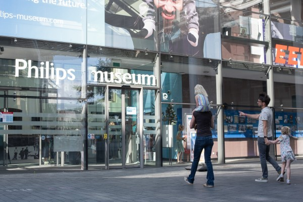

Philips Museum
Over de Museum
Het Philips
Museum is gevestigd in de Noord-Brabantse stad Eindhoven en behandelt de geschiedenis van het
bedrijf Philips.
Het bevindt zich in de eerste gloeilampenfabriek van Philips.
Het
Philips Museum zou op je lijst moeten staan wanneer je besluit wat te bezoeken in
Eindhoven.
Het biedt een belangrijk inzicht in de geschiedenis van het elektronicamerk en hun
ontwikkeling van producten in de muziek-, verlichting-, gezondheids- en
communicatie-industrieën.
Het bedrijf werd opgericht in 1891 door Gerard Philips en het meest
beroemde product dat het op de kaart zette, was de gloeilamp.
Tentoonstelling
Het museum begint aan het eind van de 19e eeuw in een slecht verlichte ruimte uit de tijd dat
kaarsverlichting de norm was.
Frederik Philips, koopman uit Zaltbommel, zorgde voor
startkapitaal voor zijn zoon Gerard om een gloeilampenfabriek te stichten in
Eindhoven.
Gerard was als ingenieur opgeleid en zijn jongere broer Anton kwam als
getalenteerd verkoper in het bedrijf.
In het museum zijn vele ontwerpen van Louis Kalff te
zien, zoals het logo en de huisstijl.
Ook de ontwerpen van Kalffs opvolgers staan uitgestald
in het museum. Verder zijn medische apparaten tentoongesteld; de productie daarvan begon in 1918
met röntgenapparatuur en vervolgens met de CT-apparatuur en MRI-scanners.
Natuurlijk zijn er
in het museum verschillende soorten lampen te zien: de gloeilamp, de tl-lamp, de natriumlamp, de
spaarlamp en de ledlamp.
Ook de tak van de consumentenelektronica komt aan bod, zoals de
radio, televisie, scheerapparaat en diverse keukenapparatuur.
Ook de initiatieven van Philips
in de radio- en televisiebranche worden belicht.
Daarnaast wordt de geschiedenis verteld van
bedrijfsleider Jan Zwartendijk, die vanuit Litouwen duizenden Joden heeft helpen vluchten
tijdens de Tweede Wereldoorlog.